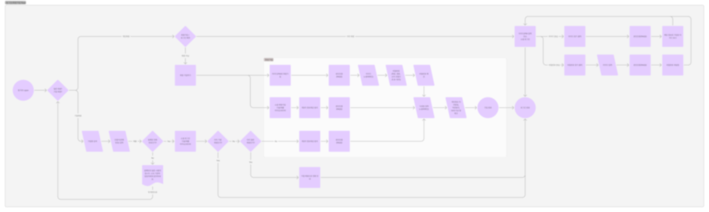
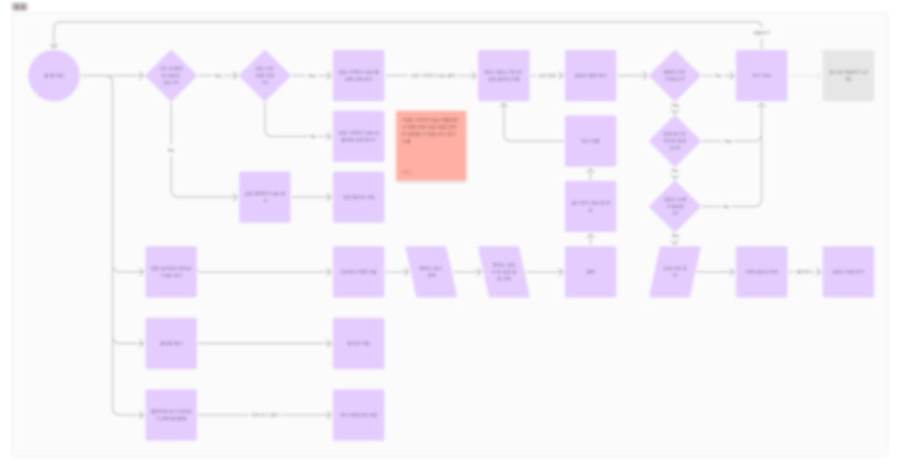
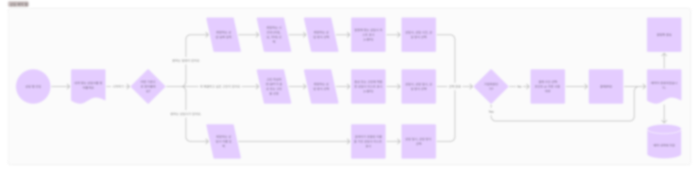
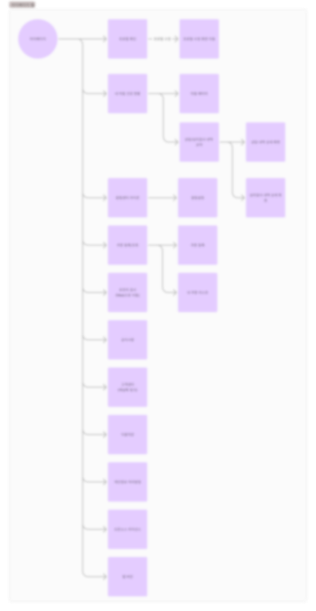

아래 내용은 기획 당시의 의도를 정확히 보여드리고자 일부 재구성하여 작성하였습니다.
당시 시장 상황도 함께 작성하였으니, 당시의 상황도 고려하여 읽어주시기 바랍니다.
유저 가입/로그인, 홈 탭, 상담 예약 탭, 마이페이지에서의 유저 Flow 작성 (Figjam)




티켓 생성 버튼을 누르면 각 개발자 Notion 페이지에 티켓이 생성되고, 해당 프로젝트 Slack 채널에 알림이 가도록 설정개발 완료로 설정 시 바로 시트에 반영되도록 구성